OpenScan: A Benchmark for Generalized Open-Vocabulary 3D Scene Understanding
1City University of Hong Kong,
2The Hong Kong University of Science and Technology
3The Chinese University of Hong Kong,
4South China University of Technology
TL;DR:
We propose GOV-3D, a task where 3D scenes are queried by attributes (e.g., affordance and material) instead of only object classes.OpenScan is a benchmark with attribute annotations covering eight linguistic aspects.

From OV-3D to GOV-3D
GOV-3D Task
ProblemClassical open-vocabulary 3D scene understanding (OV-3D) localizes objects from object class names. GOV-3D extends it to attribute-level queries, such as affordance and material. The model need to both locate the correct object and understand the semantics behind the attribute.
Why a New Benchmark?
MotivationExisting benchmarks like ScanNet, ScanNet200, and ScanNet++ mainly label object classes and cannot directly assess how well models understand attributes such as affordance and material. OpenScan fills this gap by providing attribute annotations on top of ScanNet200, allowing us to measure 3D understanding from multiple linguistic aspects.
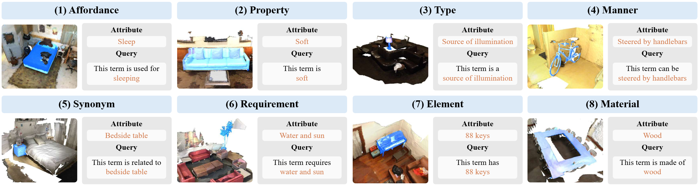
Eight Linguistic Aspects of Object Attributes
Attribute CategorizedOpenScan expands each object from a single class label into a rich set of attributes across eight linguistic aspects:
- Affordance – is the object function or usage (e.g., "sit" for a chair).
- Property – indicates the object characteristic (e.g., "soft" for a pillow).
- Type – indicates the object category or group (e.g., "a communication device" for a telephone).
- Manner – indicates the object behavior (e.g., "worn on a head" for a hat).
- Synonyms – is a term with a similar meaning (e.g., "image" for a picture).
- Requirement – indicates an essential condition that an object should possess to fulfill a specific need (e.g., "balance to ride" for a bicycle).
- Element – indicates an individual component or part that constitutes the object (e.g., "two wheels" for a bicycle).
- Material – indicates the type of material of the object (e.g., "plastic" for a bottle).
OpenScan at a Glance
Benchmark Statistics
OverviewOpenScan is constructed on top of ScanNet200 and inherits its large-scale 3D indoor scenes while adding attribute annotations. Each object can be queried by multiple attribute , enabling attribute-centric evaluation in both semantic and instance settings.
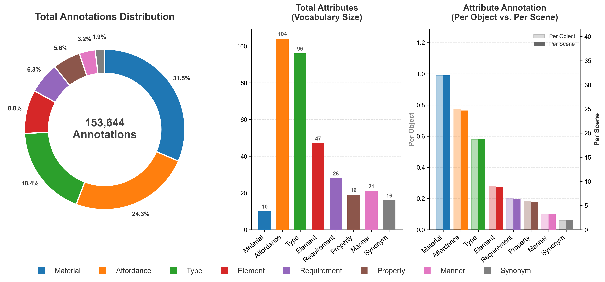
How Well Do Existing OV-3D Methods Generalize?
3D Instance Segmentation on OpenScan
QuantitativeWe benchmark multiple state-of-the-art OV-3D models on attribute-centric GOV-3D evaluation. While these methods perform strongly on class-level queries, their performance drops significantly on attribute queries, revealing a large gap between class recognition and attribute understanding.
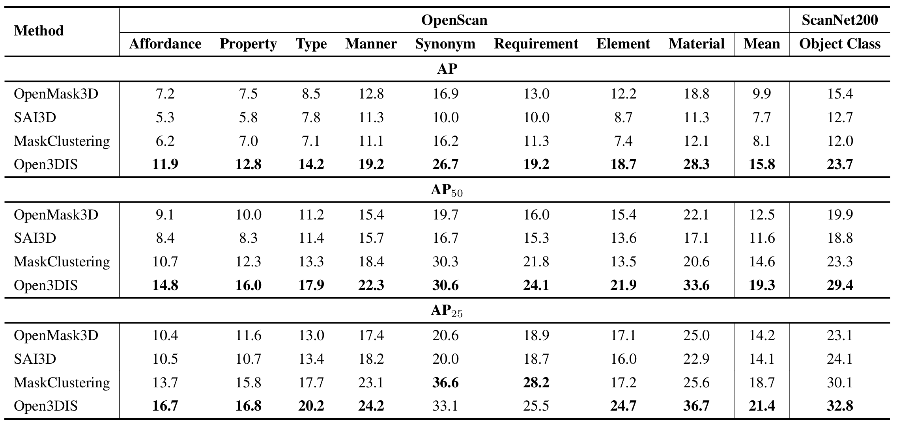
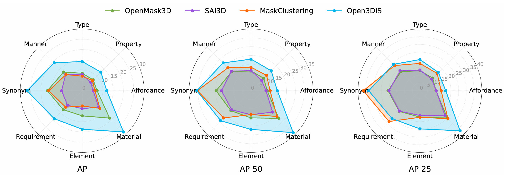
Qualitative Findings
QualitativeVisual results shows that models often succeed on class queries but fail for GOV-3D attribute queries.
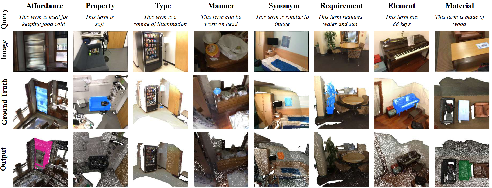
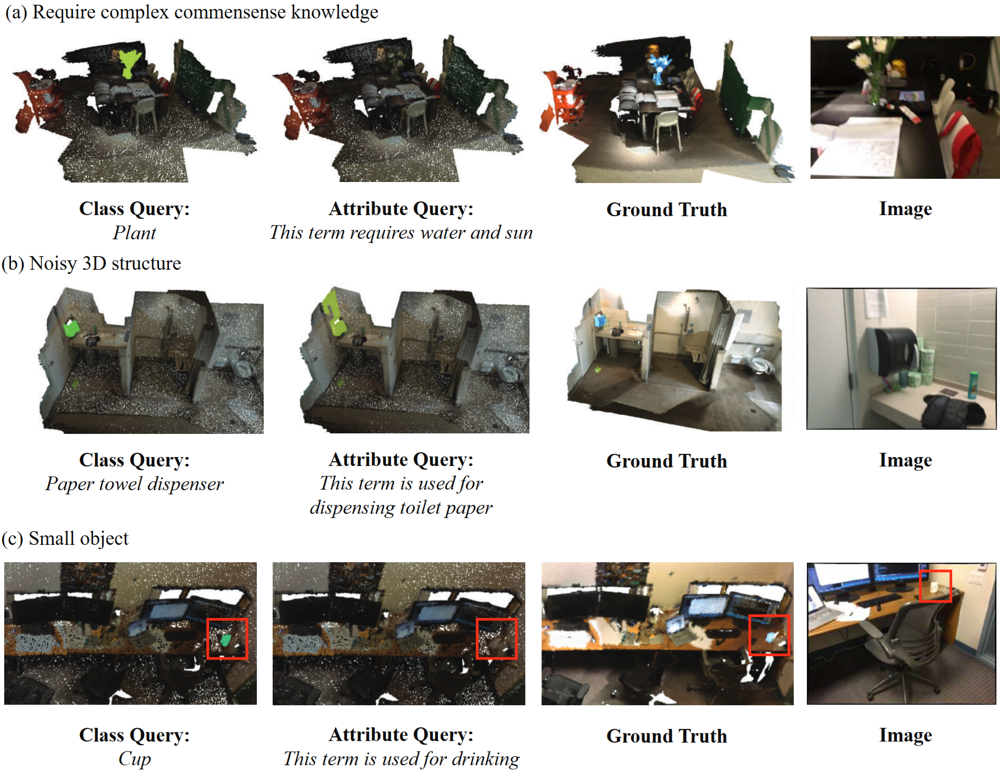
Attribute Annotation via Knowledge Graph & Human Feedback
Knowledge-Driven Attribute Mining
AutomaticWe first associate ScanNet200 objects with attributes using the ConceptNet knowledge graph. Graph edges connect object nodes and attribute nodes, allowing us to retrieve candidate attribute terms for each object and each linguistic aspect.
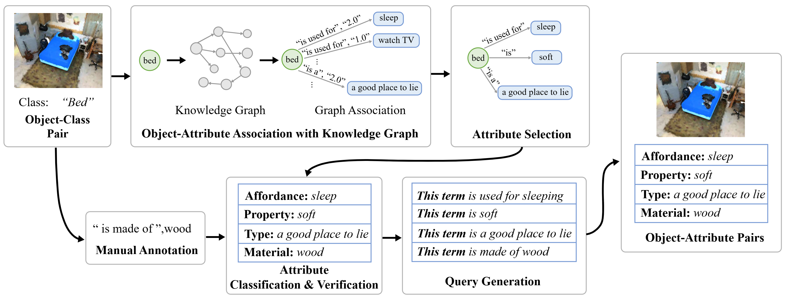
Manual Annotation
ManualFor the visual attribute that cannot be inferred without human perception, we manually annotate each 3D object by creating a web interface for annotators to select each object's visual attribute.
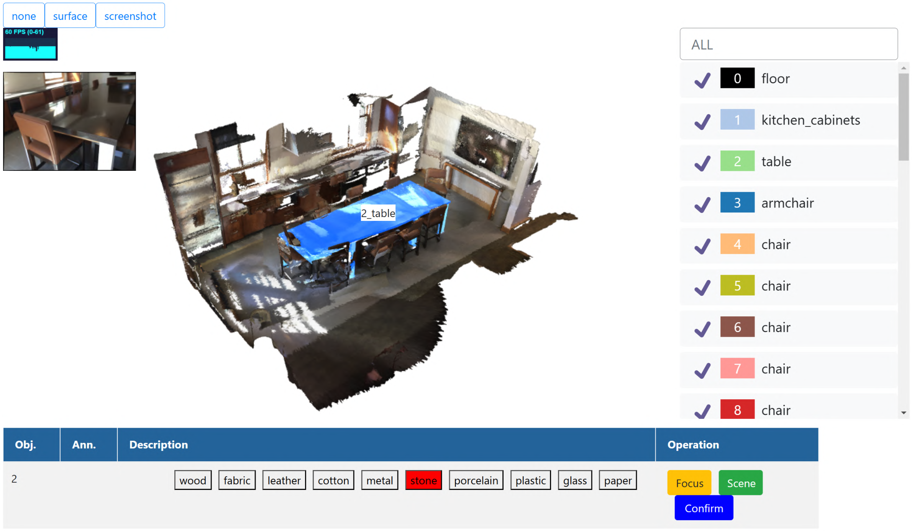
Visualizations of OpenScan Benchmark Formats and Samples
Below are visualizations of OpenScan benchmark formats and samples of eight linguistic aspects.
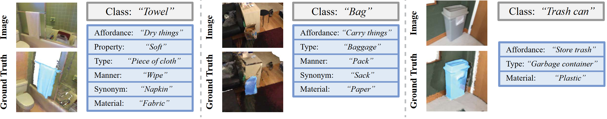
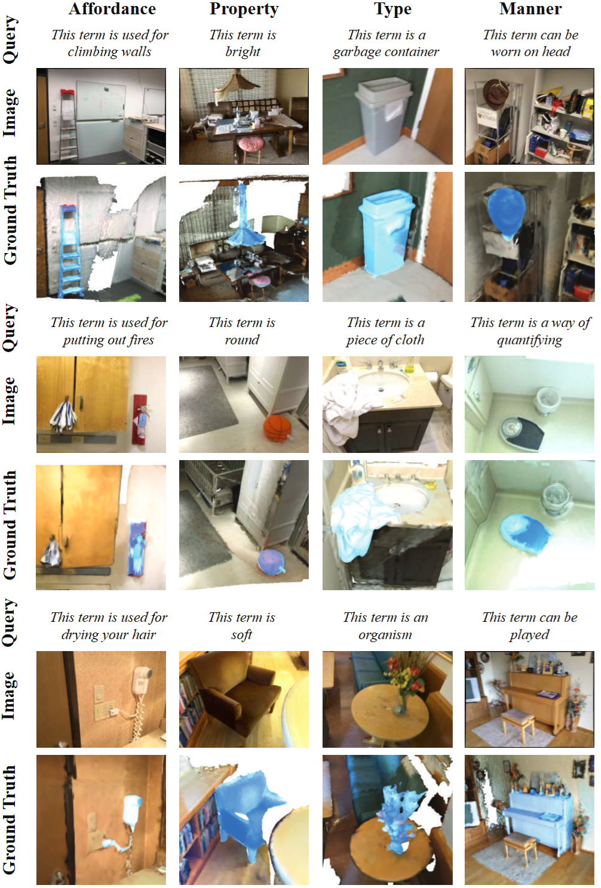
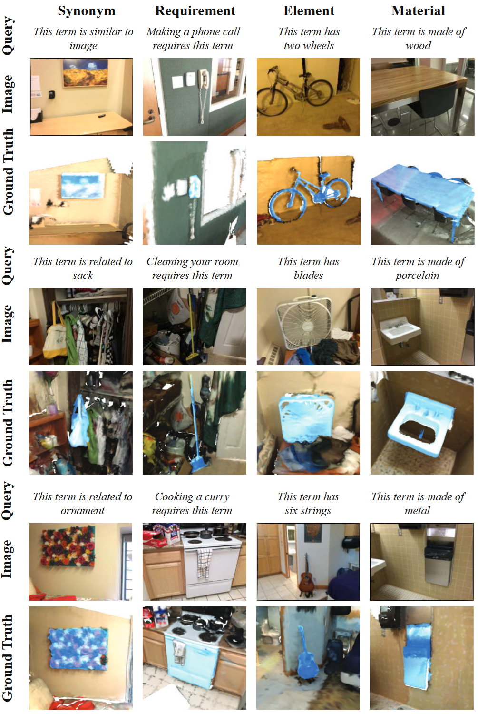
BibTeX
@article{zhao2024openscan,
title = {OpenScan: A Benchmark for Generalized Open-Vocabulary 3D Scene Understanding},
author = {Zhao, Youjun and Lin, Jiaying and Ye, Shuquan and Pang, Qianshi and Lau, Rynson W. H.},
journal = {arXiv preprint arXiv:2408.11030},
year = {2024}
}